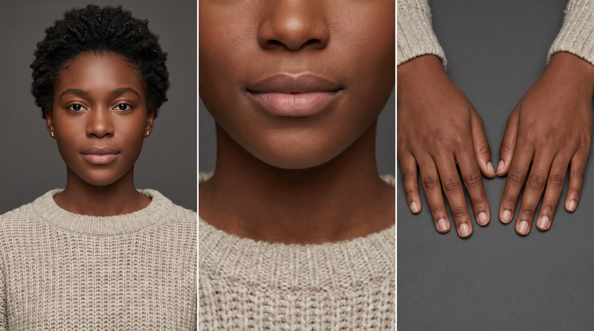
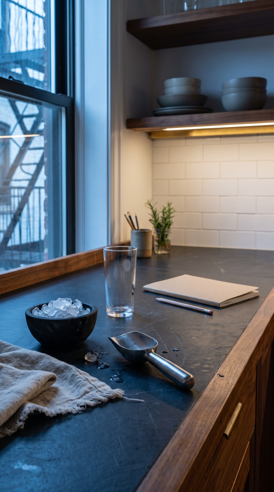
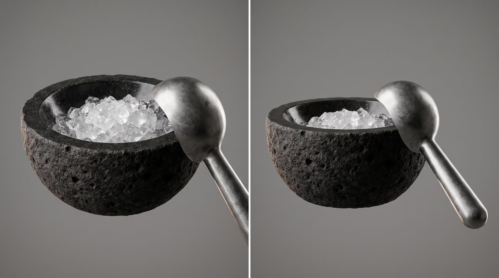
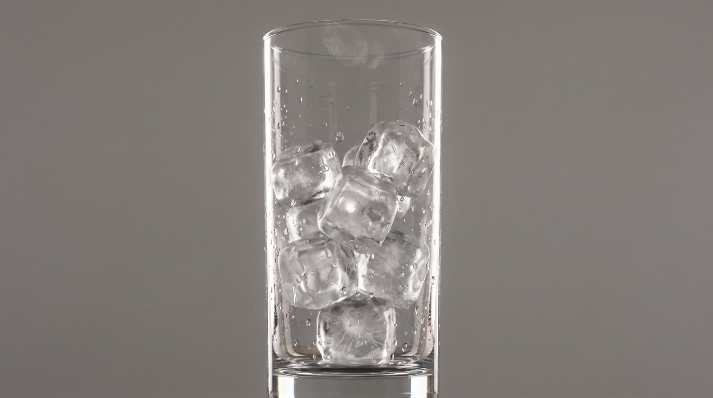
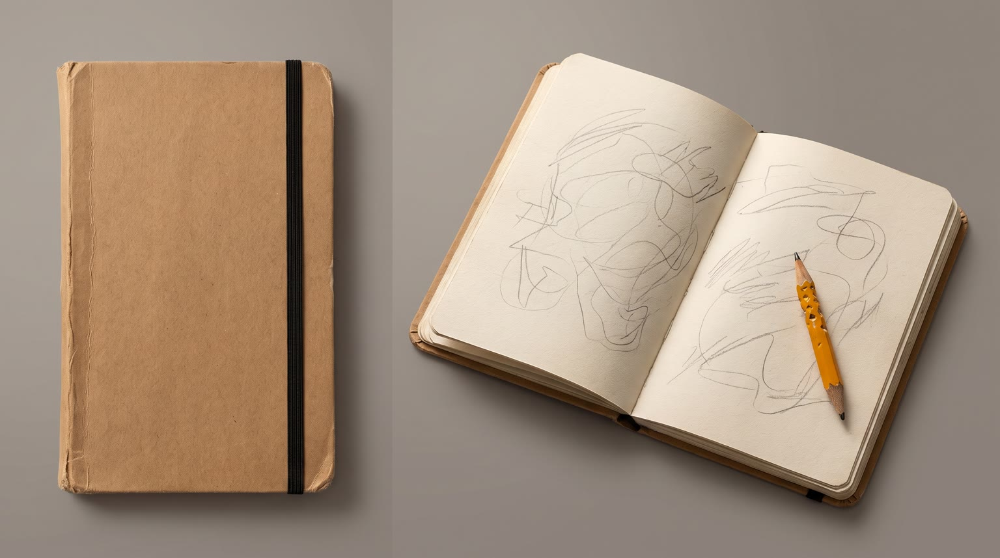

All templates · template.json · original storyboard
ASMR / satisfyingasmr-01-five-amFive A.M.
Five in the morning, a silent kitchen, the first quiet minutes before a long study session. Every sound of the ritual with {{product.name}}, heard up close.
Fit by product type
| ingested | great | seal, pour, ice and texture are the most proven ASMR triggers |
| applied | great | caps, pumps and textures spreading on skin are native to the genre |
| worn | good | zips, clasps and fabric brush are strong; footwear loses the lips-and-chin payoff and cuts to the floor |
| handheld | great | clicks, snaps and power-on tones carry the film |
| carried | good | zip purrs and leather creak are rich; the payoff is quieter |
| home | good | countertop pieces (lamps, candles, kettles, bedding, diffusers) are ideal; large furniture sits under the window and shows only in macro |
| consumable | good | seal tears and refill clicks; the use moment depends on the product having a satisfying mechanism |
Refuses: products for children; alcohol; sleep aids or sedatives (the ritual starts a study session); silent products with no tactile or audible character (the genre depends on the product's own sounds); anything used on intimate areas of the body
Cast, world and props (shipped with the template)





- Imani Brooks is a second-year public health grad student renting the top floor of a 1920s brick row house in West Philadelphia. Her qualifying exam is in six days.
- The counter is a salvaged walnut slab from a closed neighbourhood bakery, topped with a honed black slate board; she oils the walnut every Sunday and the slate still carries a pale water ring from the first week.
- She has kept the same ritual for 41 mornings in a row: 5am, the one product she always reaches for, one page of pencil notes before the sun comes up. The notebook is the fifth Aldercroft notebook this semester.
- The basalt ice bowl was her grandmother's; it is rough and pitted outside and polished smooth inside from decades of use.
- The radiator knocks twice at 5:03 every morning; that is her cue to begin.
Script: what each line must do
Right column is the worked example for Red Bull Sugarfree.
| Time | Speaker | Intent (template) | Example |
|---|---|---|---|
| 0.6-1.8 | imani (off camera) | Fixed: Shh. Listen. Max 3 words. Delivery: barely there whisper, close to the mic, a smile in it | Shh. Listen. |
| 20.2-22.2 | imani (off camera) | Product line: whisper {{product.name}} (or its short spoken form) and nothing else. the product name only; brand spoken as product.phonetic in the whisper TTS Max 4 words. Delivery: soft whisper after the exhale, each word placed | Red Bull Sugarfree. |
| 23.0-25.0 | imani (off camera) | The one benefit this quiet 5am moment before a study session needs, whispered in 3 to 5 words, from product.benefits. benefit comes only from product.benefits, reworded no further than person and tense Max 6 words. Delivery: whisper, slightly brighter, as the pencil starts | Stay sharp. No sugar. |
| 27.2-29.4 | imani (off camera) | Tagline: product.tagline if the page has one, otherwise a 3 to 5 word whispered line about the quiet first minutes of the day. Max 6 words. Delivery: slow whisper, stretched vowel, trailing off | Wiiings without sugar. |
Product-adjacent props by type
| ingested | the grandmother's basalt bowl of crushed ice with the steel scoop (signature object icebowl); the tall thin glass of clear ice (signature object glass) |
| applied | a warm damp oatmeal linen cloth folded on the slate; a small stoneware dish holding the removed cap |
| worn | a sheet of plain tissue paper folded back on the slate |
| handheld | the oatmeal linen tea towel folded beside it |
| carried | the notebook and pencil that go into it |
| home | the end of the counter under the window, or the floor under the window for large pieces |
| consumable | the opened pack with its seal peeled back |
Shots and how the product appears for each type
S01 · 0 to 2.2 s · reveal
A single fingertip drags slowly across the surface of the product, closed and still on the slate, leaving a trace; the product's own surface sound is the hook.
| ingested | one fingertip drags slowly down through the condensation beads on {{product.visual}}, closed and upright on dark slate, leaving a clean glossy line with the slow wet squeak of skin on a cold surface, the label crisp under the droplets (food: the fingertip runs along its wrapper with a soft crinkle) |
| applied | one fingertip traces slowly down the smooth side of {{product.visual}}, closed and upright on dark slate, with the dry whisper of skin gliding on its finish, the label crisp |
| worn | one fingertip drags slowly along {{product.visual}}, laid on dark slate, over its seams, grain or weave, with the brushing rasp of skin on the material |
| handheld | one fingertip glides slowly across {{product.visual}} on dark slate, over its edges and buttons, with the soft squeak of skin on a smooth finish |
| carried | one fingertip drags slowly along the seam of {{product.visual}} on dark slate and over the teeth of its zip or the edge of its flap, with a ribbed purr under the nail |
| home | one fingertip drags slowly across the surface of {{product.visual}} (its fabric, glass, wood or ceramic), set at the end of the counter or under the window beside it, with the texture of that surface audible under skin |
| consumable | one fingertip drags slowly across the pack of {{product.visual}} on dark slate, over its label, with the crinkle or dry rasp of the pack material |
S02 · 2.2 to 4.6 s · background
The prep: one small ritual gesture on the counter, the product waiting in soft focus.
| ingested | a small polished steel scoop lifting glittering crushed ice from the black basalt bowl, crystals tumbling off its edge with a crisp crunch and a glassy tinkle, {{product.visual}} waiting closed and upright in soft focus behind (food: a small stoneware plate set down with a soft clink instead) |
| applied | a hand folding a warm damp oatmeal linen cloth on the slate with a soft wet pat, {{product.visual}} waiting closed and upright in soft focus behind |
| worn | a hand folding back a sheet of plain tissue paper from {{product.visual}} with a papery crackle, the product in soft focus beneath |
| handheld | the oatmeal linen tea towel wiping the slate in one slow stroke with a dry whisper, {{product.visual}} waiting in soft focus behind |
| carried | a hand smoothing the linen tea towel flat on the slate with a soft brush, {{product.visual}} standing closed in soft focus behind |
| home | a hand clearing a space with one slow stroke of the linen tea towel, a dry whisper, {{product.visual}} in soft focus behind in the window light |
| consumable | a hand setting the pack of {{product.visual}} down on the slate with a soft tap and smoothing its corner flat with a faint crinkle |
S03 · 4.6 to 7.0 s · hero
The product settled in its place, full label to camera; a fingertip taps it twice.
| ingested | {{product.visual}} nested upright in the basalt bowl of crushed ice (food: laid on the small stoneware plate), full label to camera, a fingertip tapping it twice with two dull full taps as the ice squeaks and settles (food: two soft taps on the wrapper) |
| applied | {{product.visual}} standing upright on the slate, full label to camera, a fingertip tapping its cap twice with two small hollow clicks |
| worn | {{product.visual}} laid out on the slate with its best side and logo to camera, a fingertip tapping it twice with two soft sounds of its material (muffled pats on fabric, hollow knocks on a sole, clicks on a crystal) |
| handheld | {{product.visual}} standing or lying on the slate, logo to camera, a fingertip tapping it twice with two crisp taps on its shell |
| carried | {{product.visual}} standing upright on the slate, logo to camera, a fingertip tapping it twice with two soft thuds and the faint jingle of its hardware |
| home | {{product.visual}} at the end of the counter (or under the window beside it if it is large), best side to camera, a fingertip tapping it twice with the sound its material makes (a ceramic tink, a wooden knock, a soft pat on fabric) |
| consumable | the pack of {{product.visual}} standing upright on the slate, full label to camera, a fingertip tapping it twice with two papery taps |
S04 · 7.0 to 9.4 s · in_use
A short natural fingernail rests on the point where the product opens or switches on; stillness.
| ingested | camera directly overhead, {{product.visual}} standing upright so only its top is seen as a clean shape, not tilted and not lying on its side, still sealed with its tab, cap or wrapper edge flat and closed, a short natural nail slid under its edge and resting there (food: the frame is side-on on the plate instead of overhead) |
| applied | extreme macro on the cap or pump of {{product.visual}}, still closed, two fingertips resting on it ready to twist |
| worn | extreme macro on the fastening of {{product.visual}} (a zip pull, a buckle, a lace, a clasp), a fingertip resting on it |
| handheld | extreme macro on the button, lid or clasp of {{product.visual}}, a fingertip resting on it |
| carried | extreme macro on the zip pull or clasp of {{product.visual}}, a fingertip hooked through it |
| home | extreme macro on the switch, lid, knob or edge of {{product.visual}}, a fingertip resting on it |
| consumable | extreme macro on the seal, tear strip or lid of the pack of {{product.visual}}, a nail lifting its corner |
S05 · 9.4 to 11.4 s · hero
The hero sound: the product opens or switches on in slow motion, held 2 s.
| ingested | the tab lifts or the cap breaks and {{product.visual}} opens with a sharp crack of the seal and a pressurised hiss, a small puff of cold mist escaping, droplets leaping off the top in slow motion, the top of the label crisp below (food: the wrapper tears open in one slow crackling pull) |
| applied | the cap of {{product.visual}} twists off with a crisp click (or its pump is pressed once with a soft wet squelch), a glossy bead of its contents appearing at the opening, the label crisp below |
| worn | the fastening of {{product.visual}} opens in slow motion (a zip running with a long ribbed purr, a buckle releasing with a metallic snap, a clasp clicking open) |
| handheld | {{product.visual}} opens, switches on or snaps into place (a lid snapping open, a button clicking, a case snapping onto a phone, a soft power-on tone), its light or finish catching the backlight, logo crisp |
| carried | the zip of {{product.visual}} runs open in one slow pull with a long ribbed purr (or its magnetic flap lifts with a soft thock), the lining revealed, logo crisp |
| home | {{product.visual}} switches on, opens or yields (a switch click, a lid lifting with a soft thunk, a warm electrical hum rising, a cushion exhaling air as a palm presses it), its glow or texture catching the backlight |
| consumable | the seal of the pack of {{product.visual}} peels back in one slow pull with a long crackling tear, the contents revealed, label crisp |
S06 · 11.4 to 13.6 s · in_use
Texture: the inside, contents or working surface of the product in sharp focus.
| ingested | looking into {{product.visual}}, now open: its contents in sharp focus (fine bubbles fizzing on a liquid, or grains and pieces settling) with a fine crackle, the opening's edge soft |
| applied | a glossy bead of the contents of {{product.visual}} on a fingertip in sharp focus, its texture exact, the container soft behind, a faint wet tick as two fingertips part |
| worn | the inside of {{product.visual}} in sharp focus (lining, stitching or padding), a fingertip pressing it with a soft compressing hush |
| handheld | the working part of {{product.visual}} in sharp focus (its screen glow, its grip texture, its moving part) with its own small mechanical or electronic sound |
| carried | looking into {{product.visual}}, now open: lining, pockets and hardware in sharp focus, a fingertip running along an inner pocket with a soft fabric whisper |
| home | the texture of {{product.visual}} in use in sharp focus (fibres lifting, a glow warming, steam curling), with its quiet working hum or brush |
| consumable | looking into the open pack of {{product.visual}}: its contents in sharp focus, one piece lifted with a faint rustle |
S07 · 13.6 to 16.6 s · in_use
Use: her hand uses the product in slow motion, label to camera.
| ingested | her hand tilting {{product.visual}} at 45 degrees from the top of frame, label to camera, pouring its contents into the tall clear glass of clear ice (a beverage) or tipping them onto a small stoneware plate (food), cubes cracking and shifting or pieces tumbling, in slow motion |
| applied | two fingertips smoothing the contents of {{product.visual}} onto the back of her other hand in slow circles with a soft wet glide, the product standing label to camera beside |
| worn | her hands putting {{product.visual}} on (sliding a wrist through, lacing, zipping, pulling it over), the product clearly in frame, with the brush and snap of it settling |
| handheld | her hand using {{product.visual}} as intended close to the lens, logo to camera, with each click, tap or hum it makes |
| carried | her hand sliding the kraft notebook into {{product.visual}} and zipping it shut, logo to camera, with the ribbed zip purr and a creak of its material |
| home | her hand using {{product.visual}} as intended (switching it on, fluffing it, warming it, pouring from it), best side to camera, with its own working sound |
| consumable | her hand putting one piece from the pack of {{product.visual}} into use (clicking a refill into place, dropping a pod in, pulling a sheet free), the pack label to camera beside, with its click or rustle |
S08 · 16.6 to 19.4 s · in_use
Aftermath: the product or its effect settling, slow motion.
| ingested | through the side of the tall clear glass: {{product.visual}}'s contents with bubbles rising past clear ice, a fine white crack running through one cube with a thermal tick (for food: crumbs settling on the stoneware plate) |
| applied | her skin as the contents of {{product.visual}} sink in, the sheen settling into the skin, a faint soft tack as a fingertip lifts |
| worn | {{product.visual}} settled on her (fabric falling into place, a clasp seated, a heel settling), with a last soft settle |
| handheld | {{product.visual}} at rest after use, its light fading or its surface ticking as it settles, a last tiny click |
| carried | {{product.visual}}, now closed, its zip pull swinging and tapping once against it |
| home | {{product.visual}} settled into use, its glow, warmth or texture steady, a low hum |
| consumable | the pack of {{product.visual}} pressed shut with a soft crackle |
S09 · 19.4 to 22.6 s · in_use
Imani, seen from the nose down in her oatmeal sweater, has her moment with the product and exhales softly; the product in sharp focus.
| ingested | lowering the tall glass from her lips after one small sip (food: lowering the product from her lips after one small bite) and exhaling softly, {{product.visual}} open on the slate in front of her in sharp focus, label to camera |
| applied | pressing two fingertips gently along her jaw where she has smoothed on {{product.visual}}, then exhaling softly, the product upright on the slate in front of her in sharp focus, label to camera |
| worn | wearing {{product.visual}}, settling it into place with one hand near her chin (a collar, a strap, a sleeve), then exhaling softly, the product in sharp focus (footwear: the frame drops to her foot sliding into it on the wooden floor, same light) |
| handheld | raising {{product.visual}} near her chin and using it once, exhaling softly, the product in sharp focus, logo to camera |
| carried | hugging {{product.visual}}, zipped, to her chest and exhaling softly, the product in sharp focus, logo to camera |
| home | resting her chin on her hand beside {{product.visual}} as it glows, hums or warms (or sinking back into it if it is seating), exhaling softly, the product in sharp focus |
| consumable | exhaling softly after putting one piece from the pack of {{product.visual}} to use, the pack upright on the slate in front of her in sharp focus, label to camera |
S10 · 22.6 to 26.0 s · absent
Her pencil touches the notebook page and starts writing in fast, even strokes; the study session begins.
S11 · 26.0 to 30 s · hero
The product alone on the slate, one last small sound; empty dark space above for the tagline.
| ingested | {{product.visual}} alone and upright on the black slate, full label to camera, beaded with condensation, one large drop rolling down it (food: resting on the small stoneware plate, wrapper folded back) |
| applied | {{product.visual}} alone and upright on the black slate, cap back on, full label to camera, one glossy bead on its rim catching the light |
| worn | {{product.visual}} alone on the black slate, neatly laid or standing, best side and logo to camera, a single thread of window light across it |
| handheld | {{product.visual}} alone on the black slate, logo to camera, its light fading down |
| carried | {{product.visual}} alone and upright on the black slate, logo to camera, its zip pull swinging to rest |
| home | {{product.visual}} alone in the window light at the end of the counter (large pieces on the floor under the window beside it), best side to camera, glowing or at rest |
| consumable | the pack of {{product.visual}} alone and upright on the black slate, full label to camera, resealed |
Generation units (templated prompts)
U1 · 7 s
9:16 ASMR macro film, dark walnut and slate kitchen at 5am, ultra-crisp 100mm macro, soft low side light. Shot 1 (0 to 2.2 s): extreme macro, the hand of @Image2, {{action.S01}}, the product exactly as @Image1. Shot 2 (2.2 to 4.6 s): on the counter of @Image3, {{action.S02}}. Shot 3 (4.6 to 7 s): slow slider, {{action.S03}}. The product keeps its exact shape and label. Native close-mic sound: exactly the sounds named in the actions above, dry and close, with a silence floor of room tone. No speech. No music. No text.U2 · 13 s
9:16 ASMR macro film, dark background, backlit detail. Shot 1 (0 to 2.4 s): {{action.S04}}, the hand of @Image2 on the product from @Image1, a tiny tick and then stillness, half a second of silence. Shot 2 (2.4 to 4.4 s): slow motion, {{action.S05}}. Shot 3 (4.4 to 6.6 s): slow rack focus, {{action.S06}}. Shot 4 (6.6 to 9.6 s): {{action.S07}}. Shot 5 (9.6 to 13 s): {{action.S08}}. One product, one hand, nothing else added to the counter. Native close-mic sound: exactly the sounds named in the actions above, dry and close, with a silence floor of room tone. No speech. No music. No text.U3 · 4 s · exact-risk
9:16 ASMR close-up, pre-dawn window light and a warm under-cabinet glow. @Image2 seen only from the nose down in an oatmeal sweater, {{action.S09}}; the product matches @Image1 exactly, label facing camera and undistorted. Native close-mic sound: exactly the sounds named in the actions above, dry and close, with a silence floor of room tone. A quiet exhale. No speech (the whisper is added in post). No music. No text.U4 · 8 s · exact-risk
9:16 ASMR macro. Shot 1 (0 to 3.4 s): top-down, the hand of @Image2 starts writing in a notebook with a pencil in fast even strokes, the marks are soft unreadable scribble shapes. Shot 2 (3.4 to 8 s): locked pack shot, {{action.S11}}, the product exactly as @Image1; one slow rack focus; empty dark space above the product. The product does not move or change. Native close-mic sound: pencil graphite scratching, a page corner lifting, then the product's last small sound named above, room tone. No speech. No music. No text.